OCS 4.2 in OCP 4.2.14 - UPI installation in RHV
When OCS 4.2 GA was released days ago, I was thrilled to finally test and deploy it in my lab. I read the documentation and saw that only vSphere and AWS installations are currently supported. My lab is installed in an RHV environment following the UPI Bare Metal documentation so, in the beginning, I was a bit disappointed. I realized that it could be an interesting challenge to find a different way to use it and, well, I found it during my day by day late night fun. All the following procedures are unsupported.
Table of Contents
Prerequisites
- An OCP 4.2.x cluster installed (the current latest version is 4.2.14)
- The possibility to create new local disks inside the VMs (if you are using a virtualized environment) or servers with disks that can be used
Issues
The official OCS 4.2 installation in vSphere requires a minimum of 3 nodes which use 2TB volume each (a PVC using the default “thin” storage class) for the OSD volumes + 10GB for each mon POD (3 in total using always a PVC). It also requires 16 CPU and 64GB RAM for node.
Use case scenario
- bare-metal installations
- vSphere cluster
- without a shared datastore
- you don’t want to use the vSphere dynamic provisioner
- without enough space in the datastore
- without enough RAM or CPU
- other virtualized installation (for example RHV which is the one used for this article)
Challenges
- create a PVC using local disks
- change the default 2TB volumes size
- define a different StorageClass (without using a default one) for the mon PODs and the OSD volumes
- define different limits and requests per component
Solutions
- use the local storage operator
- create the ocs-storagecluster resource using a YAML file instead of the new interface. That means also add the labels to the worker nodes that are going to be used by OCS
Procedures
Add the disks in the VMs. Add 2 disks for each node. 10GB disk for mon POD and 100GB disk for the OSD volume 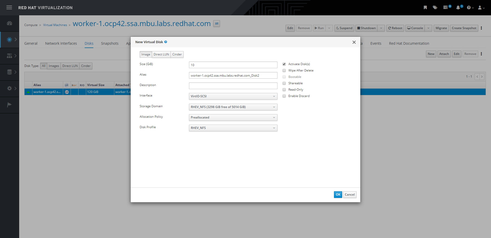 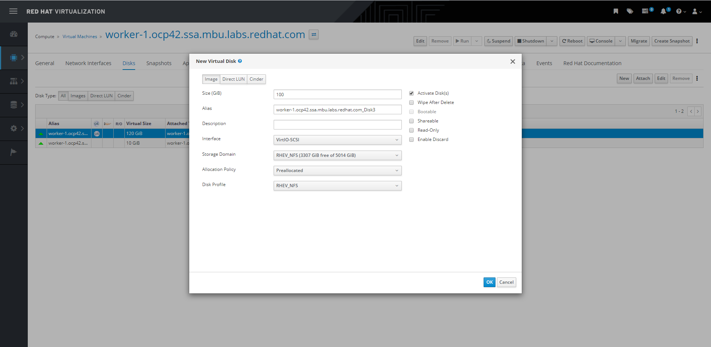 Repeat for the other 2 nodes
The disks MUST be in the same order and have the same device name in all the nodes. For example, /dev/sdb MUST be the 10GB disk and /dev/sdc the 100GB disk in all the nodes.
[root@utility ~]# for i in {1..3} ; do ssh core@worker-${i}.ocp42.ssa.mbu.labs.redhat.com lsblk | egrep "^sdb.*|sdc.*$" ; done
sdb 8:16 0 10G 0 disk
sdc 8:32 0 100G 0 disk
sdb 8:16 0 10G 0 disk
sdc 8:32 0 100G 0 disk
sdb 8:16 0 10G 0 disk
sdc 8:32 0 100G 0 disk
[root@utility ~]#
Install the Local Storage Operator. Here the official documentation
Create the namespace
[root@utility ~]# oc new-project local-storage
Then install the operator from the OperatorHub 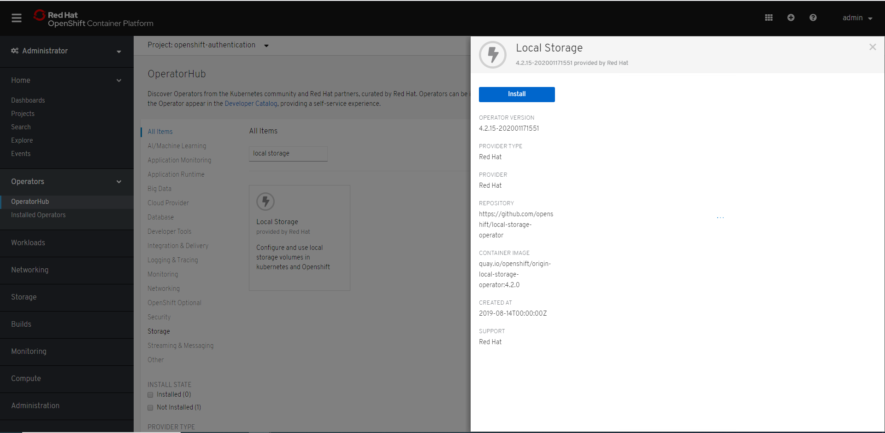 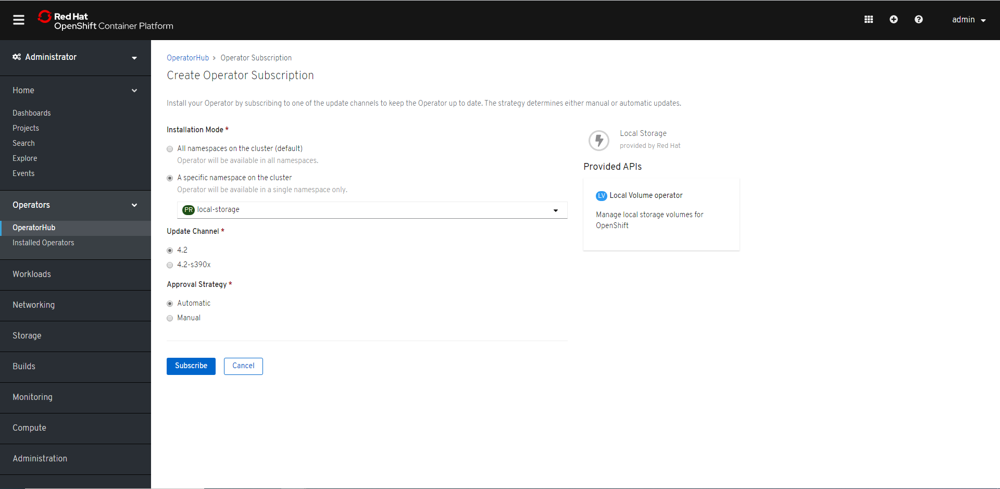
Wait for the operator POD up&running
[root@utility ~]# oc get pod -n local-storage
NAME READY STATUS RESTARTS AGE
local-storage-operator-ccbb59b45-nn7ww 1/1 Running 0 57s
[root@utility ~]#
The Local Storage Operator works using the devices as reference. The LocalVolume resource scans the nodes which match the selector and creates a StorageClass for the device.
Do not use different StorageClass names for the same device.
We need the Filesystem type for these volumes. Prepare the LocalVolume YAML file to create the resource for the mon PODs which use /dev/sdb
[root@utility ~]# cat <<EOF > local-storage-filesystem.yaml
apiVersion: "local.storage.openshift.io/v1"
kind: "LocalVolume"
metadata:
name: "local-disks-fs"
namespace: "local-storage"
spec:
nodeSelector:
nodeSelectorTerms:
- matchExpressions:
- key: kubernetes.io/hostname
operator: In
values:
- worker-1.ocp42.ssa.mbu.labs.redhat.com
- worker-2.ocp42.ssa.mbu.labs.redhat.com
- worker-3.ocp42.ssa.mbu.labs.redhat.com
storageClassDevices:
- storageClassName: "local-sc"
volumeMode: Filesystem
devicePaths:
- /dev/sdb
EOF
Then create the resource
[root@utility ~]# oc create -f local-storage-filesystem.yaml
localvolume.local.storage.openshift.io/local-disks-fs created
[root@utility ~]#
Check if all the PODs are up&running and if the StorageClass and the PVs exist
[root@utility ~]# oc get pod -n local-storage
NAME READY STATUS RESTARTS AGE
local-disks-fs-local-diskmaker-2bqw4 1/1 Running 0 106s
local-disks-fs-local-diskmaker-8w9rz 1/1 Running 0 106s
local-disks-fs-local-diskmaker-khhm5 1/1 Running 0 106s
local-disks-fs-local-provisioner-g5dgv 1/1 Running 0 106s
local-disks-fs-local-provisioner-hkj69 1/1 Running 0 106s
local-disks-fs-local-provisioner-vhpj8 1/1 Running 0 106s
local-storage-operator-ccbb59b45-nn7ww 1/1 Running 0 15m
[root@utility ~]# oc get sc
NAME PROVISIONER AGE
local-sc kubernetes.io/no-provisioner 109s
[root@utility ~]# oc get pv
NAME CAPACITY ACCESS MODES RECLAIM POLICY STATUS CLAIM STORAGECLASS REASON AGE
local-pv-68faed78 10Gi RWO Delete Available local-sc 84s
local-pv-780afdd6 10Gi RWO Delete Available local-sc 83s
local-pv-b640422f 10Gi RWO Delete Available local-sc 9s
[root@utility ~]#
The PVs were created.
Prepare the LocalVolume YAML file to create the resource for the OSD volumes which use /dev/sdc
We need the Block type for these volumes.
[root@utility ~]# cat <<EOF > local-storage-block.yaml
apiVersion: "local.storage.openshift.io/v1"
kind: "LocalVolume"
metadata:
name: "local-disks"
namespace: "local-storage"
spec:
nodeSelector:
nodeSelectorTerms:
- matchExpressions:
- key: kubernetes.io/hostname
operator: In
values:
- worker-1.ocp42.ssa.mbu.labs.redhat.com
- worker-2.ocp42.ssa.mbu.labs.redhat.com
- worker-3.ocp42.ssa.mbu.labs.redhat.com
storageClassDevices:
- storageClassName: "localblock-sc"
volumeMode: Block
devicePaths:
- /dev/sdc
EOF
Then create the resource
[root@utility ~]# oc create -f local-storage-block.yaml
localvolume.local.storage.openshift.io/local-disks created
[root@utility ~]#
Check if all the PODs are up&running and if the StorageClass and the PVs exist
[root@utility ~]# oc get pod -n local-storage
NAME READY STATUS RESTARTS AGE
local-disks-fs-local-diskmaker-2bqw4 1/1 Running 0 6m33s
local-disks-fs-local-diskmaker-8w9rz 1/1 Running 0 6m33s
local-disks-fs-local-diskmaker-khhm5 1/1 Running 0 6m33s
local-disks-fs-local-provisioner-g5dgv 1/1 Running 0 6m33s
local-disks-fs-local-provisioner-hkj69 1/1 Running 0 6m33s
local-disks-fs-local-provisioner-vhpj8 1/1 Running 0 6m33s
local-disks-local-diskmaker-6qpfx 1/1 Running 0 22s
local-disks-local-diskmaker-pw5ql 1/1 Running 0 22s
local-disks-local-diskmaker-rc5hr 1/1 Running 0 22s
local-disks-local-provisioner-9qprp 1/1 Running 0 22s
local-disks-local-provisioner-kkkcm 1/1 Running 0 22s
local-disks-local-provisioner-kxbnn 1/1 Running 0 22s
local-storage-operator-ccbb59b45-nn7ww 1/1 Running 0 19m
[root@utility ~]# oc get sc
NAME PROVISIONER AGE
local-sc kubernetes.io/no-provisioner 6m36s
localblock-sc kubernetes.io/no-provisioner 25s
[root@utility ~]# oc get pv
NAME CAPACITY ACCESS MODES RECLAIM POLICY STATUS CLAIM STORAGECLASS REASON AGE
local-pv-5c4e718c 100Gi RWO Delete Available localblock-sc 10s
local-pv-68faed78 10Gi RWO Delete Available local-sc 6m13s
local-pv-6a58375e 100Gi RWO Delete Available localblock-sc 10s
local-pv-780afdd6 10Gi RWO Delete Available local-sc 6m12s
local-pv-b640422f 10Gi RWO Delete Available local-sc 4m58s
local-pv-d6db37fd 100Gi RWO Delete Available localblock-sc 5s
[root@utility ~]#
All the PVs were created.
Install OCS 4.2. Here the official documentation
Create the namespace “openshift-storage”
[root@utility ~]# cat <<EOF > ocs-namespace.yaml
apiVersion: v1
kind: Namespace
metadata:
name: openshift-storage
labels:
openshift.io/cluster-monitoring: "true"
EOF
[root@utility ~]# oc create -f ocs-namespace.yaml
namespace/openshift-storage created
[root@utility ~]#
Add the labels to the workers
oc label node worker-1.ocp42.ssa.mbu.labs.redhat.com "cluster.ocs.openshift.io/openshift-storage=" --overwrite
oc label node worker-1.ocp42.ssa.mbu.labs.redhat.com "topology.rook.io/rack=rack0" --overwrite
oc label node worker-2.ocp42.ssa.mbu.labs.redhat.com "cluster.ocs.openshift.io/openshift-storage=" --overwrite
oc label node worker-2.ocp42.ssa.mbu.labs.redhat.com "topology.rook.io/rack=rack1" --overwrite
oc label node worker-3.ocp42.ssa.mbu.labs.redhat.com "cluster.ocs.openshift.io/openshift-storage=" --overwrite
oc label node worker-3.ocp42.ssa.mbu.labs.redhat.com "topology.rook.io/rack=rack3" --overwrite
Install the operator from the web interface 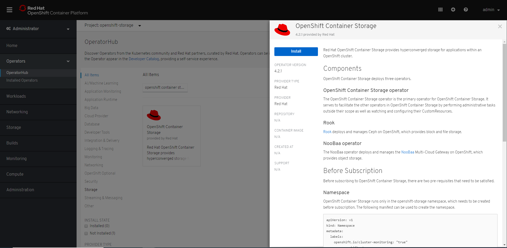 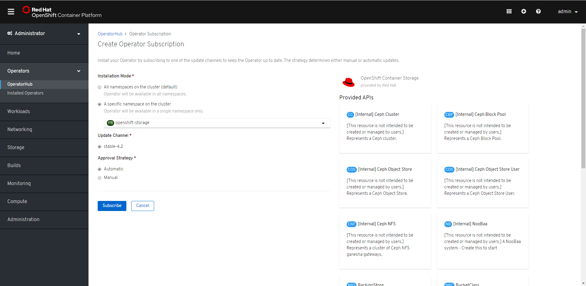
Check on the web interface if the operator is Up to date 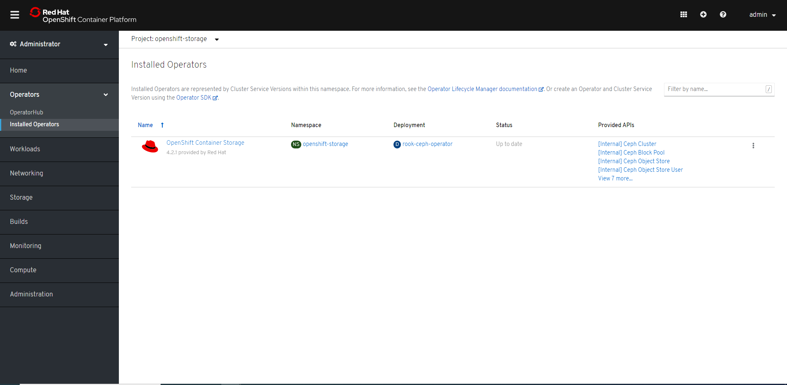
And wait for the PODs up&running
[root@utility ~]# oc get pod -n openshift-storage
NAME READY STATUS RESTARTS AGE
noobaa-operator-85d86479fc-n8vp5 1/1 Running 0 106s
ocs-operator-65cf57b98b-rk48c 1/1 Running 0 106s
rook-ceph-operator-59d78cf8bd-4zcsz 1/1 Running 0 106s
[root@utility ~]#
Create the OCS Cluster Service YAML file
[root@utility ~]# cat <<EOF > ocs-cluster-service.yaml
apiVersion: ocs.openshift.io/v1
kind: StorageCluster
metadata:
name: ocs-storagecluster
namespace: openshift-storage
spec:
manageNodes: false
monPVCTemplate:
spec:
accessModes:
- ReadWriteOnce
resources:
requests:
storage: 10Gi
storageClassName: 'local-sc'
volumeMode: Filesystem
storageDeviceSets:
- count: 1
dataPVCTemplate:
spec:
accessModes:
- ReadWriteOnce
resources:
requests:
storage: 100Gi
storageClassName: 'localblock-sc'
volumeMode: Block
name: ocs-deviceset
placement: {}
portable: true
replica: 3
resources: {}
EOF
You can notice the “monPVCTemplate” section in which we define the StorageClass “local-sc” and in the section “storageDeviceSets” the different storage sizes and the StorageClass “localblock-sc” used by OSD volumes.
Now we can create the resource
[root@utility ~]# oc create -f ocs-cluster-service.yaml
storagecluster.ocs.openshift.io/ocs-storagecluster created
[root@utility ~]#
During the creation of the resources, we can see how the PVCs created are bounded with the Local Storage PVs
[root@utility ~]# oc get pvc -n openshift-storage
NAME STATUS VOLUME CAPACITY ACCESS MODES STORAGECLASS AGE
rook-ceph-mon-a Bound local-pv-68faed78 10Gi RWO local-sc 13s
rook-ceph-mon-b Bound local-pv-b640422f 10Gi RWO local-sc 8s
rook-ceph-mon-c Bound local-pv-780afdd6 10Gi RWO local-sc 3s
[root@utility ~]# oc get pv
NAME CAPACITY ACCESS MODES RECLAIM POLICY STATUS CLAIM STORAGECLASS REASON AGE
local-pv-5c4e718c 100Gi RWO Delete Available localblock-sc 28m
local-pv-68faed78 10Gi RWO Delete Bound openshift-storage/rook-ceph-mon-a local-sc 34m
local-pv-6a58375e 100Gi RWO Delete Available localblock-sc 28m
local-pv-780afdd6 10Gi RWO Delete Bound openshift-storage/rook-ceph-mon-c local-sc 34m
local-pv-b640422f 10Gi RWO Delete Bound openshift-storage/rook-ceph-mon-b local-sc 33m
local-pv-d6db37fd 100Gi RWO Delete Available localblock-sc 28m
[root@utility ~]#
And now we can see the OSD PVCs and the PVs bounded
[root@utility ~]# oc get pvc -n openshift-storage
NAME STATUS VOLUME CAPACITY ACCESS MODES STORAGECLASS AGE
ocs-deviceset-0-0-7j2kj Bound local-pv-6a58375e 100Gi RWO localblock-sc 3s
ocs-deviceset-1-0-lmd97 Bound local-pv-d6db37fd 100Gi RWO localblock-sc 3s
ocs-deviceset-2-0-dnfbd Bound local-pv-5c4e718c 100Gi RWO localblock-sc 3s
[root@utility ~]# oc get pv | grep localblock-sc
local-pv-5c4e718c 100Gi RWO Delete Bound openshift-storage/ocs-deviceset-2-0-dnfbd localblock-sc 31m
local-pv-6a58375e 100Gi RWO Delete Bound openshift-storage/ocs-deviceset-0-0-7j2kj localblock-sc 31m
local-pv-d6db37fd 100Gi RWO Delete Bound openshift-storage/ocs-deviceset-1-0-lmd97 localblock-sc 31m
[root@utility ~]#
This is the first PVC created inside the OCS cluster used by noobaa
[root@utility ~]# oc get pvc -n openshift-storage
NAME STATUS VOLUME CAPACITY ACCESS MODES STORAGECLASS AGE
db-noobaa-core-0 Bound pvc-d8dbb86f-3d83-11ea-ac51-001a4a16017d 50Gi RWO ocs-storagecluster-ceph-rbd 72s
Wait for all the PODs up&running
[root@utility ~]# oc get pod -n openshift-storage
NAME READY STATUS RESTARTS AGE
csi-cephfsplugin-2qkl8 3/3 Running 0 5m31s
csi-cephfsplugin-4pbvl 3/3 Running 0 5m31s
csi-cephfsplugin-j8w82 3/3 Running 0 5m31s
csi-cephfsplugin-provisioner-647cd6996c-6mw9t 4/4 Running 0 5m31s
csi-cephfsplugin-provisioner-647cd6996c-pbrxs 4/4 Running 0 5m31s
csi-rbdplugin-9nj85 3/3 Running 0 5m31s
csi-rbdplugin-jmnqz 3/3 Running 0 5m31s
csi-rbdplugin-provisioner-6b8ff67dc4-jk5lm 4/4 Running 0 5m31s
csi-rbdplugin-provisioner-6b8ff67dc4-rxjhq 4/4 Running 0 5m31s
csi-rbdplugin-vrzjq 3/3 Running 0 5m31s
noobaa-core-0 1/2 Running 0 2m34s
noobaa-operator-85d86479fc-n8vp5 1/1 Running 0 13m
ocs-operator-65cf57b98b-rk48c 0/1 Running 0 13m
rook-ceph-drain-canary-worker-1.ocp42.ssa.mbu.labs.redhat.w2cqv 1/1 Running 0 2m41s
rook-ceph-drain-canary-worker-2.ocp42.ssa.mbu.labs.redhat.whv6s 1/1 Running 0 2m40s
rook-ceph-drain-canary-worker-3.ocp42.ssa.mbu.labs.redhat.ll8gj 1/1 Running 0 2m40s
rook-ceph-mds-ocs-storagecluster-cephfilesystem-a-d7d64976d8cm7 1/1 Running 0 2m28s
rook-ceph-mds-ocs-storagecluster-cephfilesystem-b-864fdf78ppnpm 1/1 Running 0 2m27s
rook-ceph-mgr-a-5fd6f7578c-wbsb6 1/1 Running 0 3m24s
rook-ceph-mon-a-bffc546c8-vjrfb 1/1 Running 0 4m26s
rook-ceph-mon-b-8499dd679c-6pzm9 1/1 Running 0 4m11s
rook-ceph-mon-c-77cd5dd54-64z52 1/1 Running 0 3m46s
rook-ceph-operator-59d78cf8bd-4zcsz 1/1 Running 0 13m
rook-ceph-osd-0-b46fbc7d7-hc2wz 1/1 Running 0 2m41s
rook-ceph-osd-1-648c5dc8d6-prwks 1/1 Running 0 2m40s
rook-ceph-osd-2-546d4d77fb-qb68j 1/1 Running 0 2m40s
rook-ceph-osd-prepare-ocs-deviceset-0-0-7j2kj-s72g4 0/1 Completed 0 2m56s
rook-ceph-osd-prepare-ocs-deviceset-1-0-lmd97-27chl 0/1 Completed 0 2m56s
rook-ceph-osd-prepare-ocs-deviceset-2-0-dnfbd-s7z8v 0/1 Completed 0 2m56s
rook-ceph-rgw-ocs-storagecluster-cephobjectstore-a-d7b4b5b6hnpr 1/1 Running 0 2m12s
Our installation is now complete and OCS fully operative.
Now we can browse the noobaa management console (for now it only works in Chrome) and create a new user to test the S3 object storage 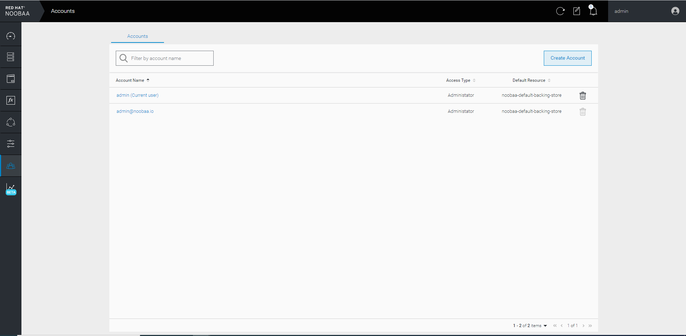 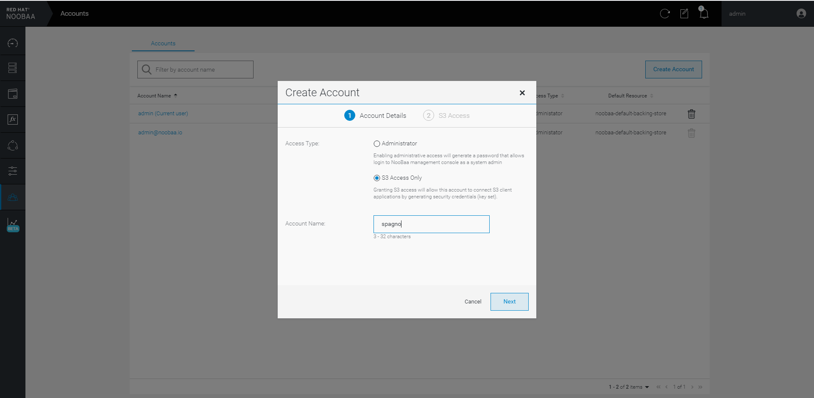 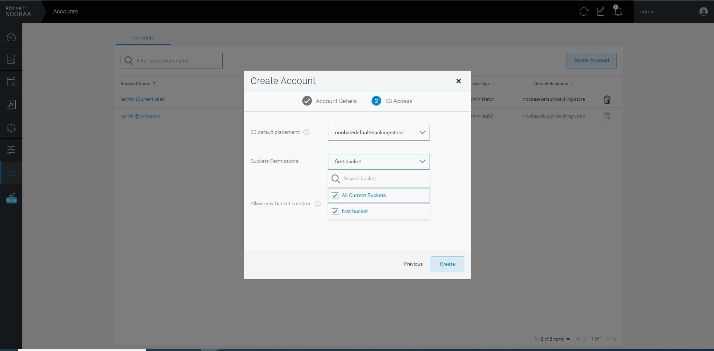 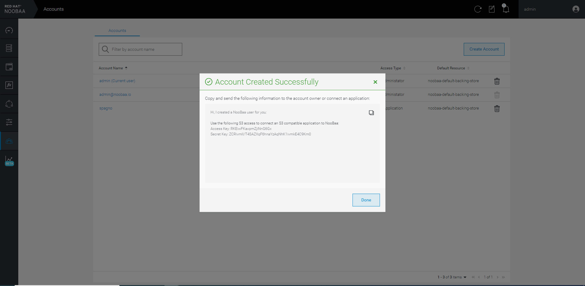
Get the endpoint for the S3 object server
[root@utility ~]# oc get route s3 -o jsonpath='{.spec.host}' -n openshift-storage
s3-openshift-storage.apps.ocp42.ssa.mbu.labs.redhat.com
Test it with your preferred S3 client (I use Cyberduck in my windows desktop which I’m using to write this article) 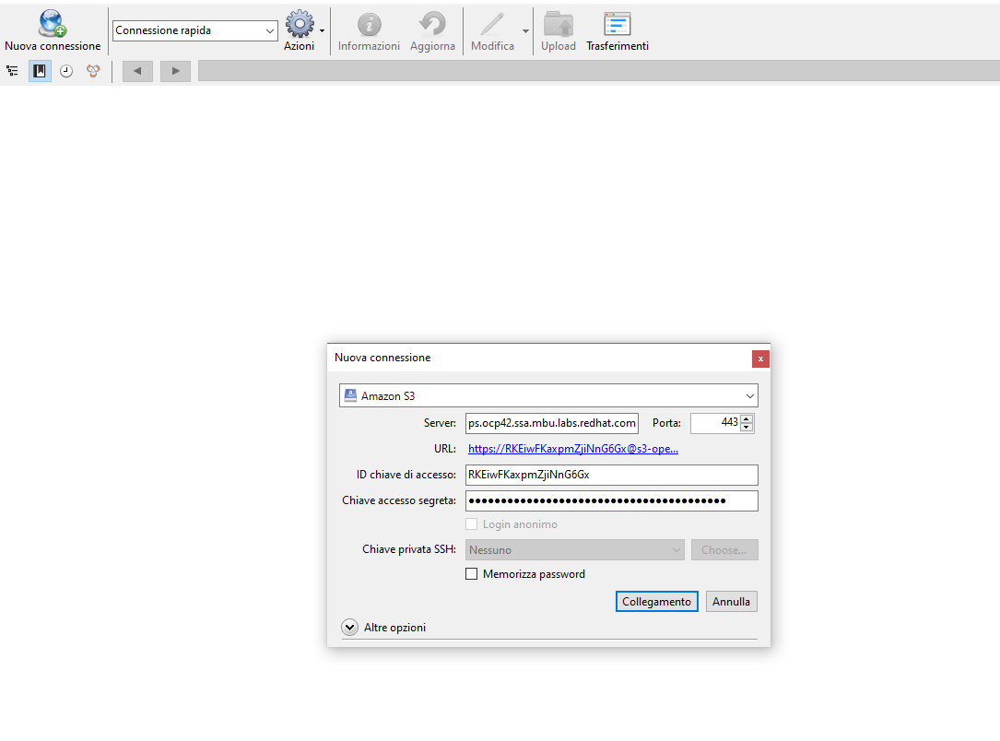 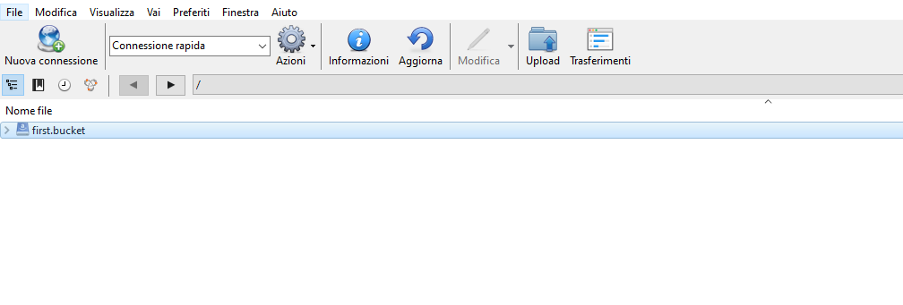
Create something to check if you can write 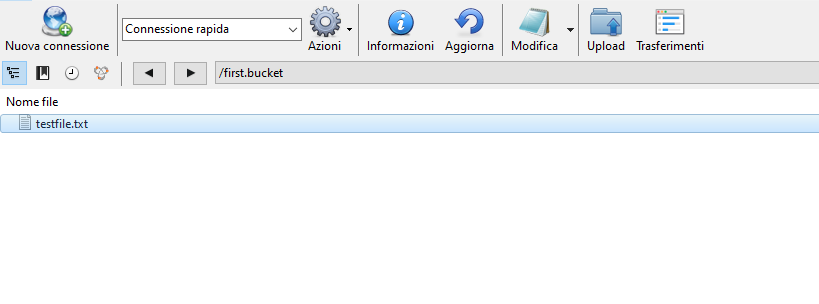
It works!
Set the ocs-storagecluster-cephfs StorageClass as the default one
[root@utility ~]# oc patch storageclass ocs-storagecluster-cephfs -p '{"metadata": {"annotations":{"storageclass.kubernetes.io/is-default-class":"true"}}}'
storageclass.storage.k8s.io/ocs-storagecluster-cephfs patched
[root@utility ~]#
Test the ocs-storagecluster-cephfs StorageClass adding persistent storage to the registry
[root@utility ~]# oc edit configs.imageregistry.operator.openshift.io
storage:
pvc:
claim:
Check the PVC created and wait for the new POD up&running
[root@utility ~]# oc get pvc -n openshift-image-registry
NAME STATUS VOLUME CAPACITY ACCESS MODES STORAGECLASS AGE
image-registry-storage Bound pvc-ba4a07c1-3d86-11ea-ad40-001a4a1601e7 100Gi RWX ocs-storagecluster-cephfs 12s
[root@utility ~]# oc get pod -n openshift-image-registry
NAME READY STATUS RESTARTS AGE
cluster-image-registry-operator-655fb7779f-pn7ms 2/2 Running 0 36h
image-registry-5bdf96556-98jbk 1/1 Running 0 105s
node-ca-9gbxg 1/1 Running 1 35h
node-ca-fzcrm 1/1 Running 0 35h
node-ca-gr928 1/1 Running 1 35h
node-ca-jkfzf 1/1 Running 1 35h
node-ca-knlcj 1/1 Running 0 35h
node-ca-mb6zh 1/1 Running 0 35h
[root@utility ~]#
Test it in a new project test
[root@utility ~]# oc new-project test
Now using project "test" on server "https://api.ocp42.ssa.mbu.labs.redhat.com:6443".
You can add applications to this project with the 'new-app' command. For example, try:
oc new-app django-psql-example
to build a new example application in Python. Or use kubectl to deploy a simple Kubernetes application:
kubectl create deployment hello-node --image=gcr.io/hello-minikube-zero-install/hello-node
[root@utility ~]# podman pull alpine
Trying to pull docker.io/library/alpine...Getting image source signatures
Copying blob c9b1b535fdd9 doneCopying config e7d92cdc71 doneWriting manifest to image destination
Storing signaturese7d92cdc71feacf90708cb59182d0df1b911f8ae022d29e8e95d75ca6a99776a
[root@utility ~]# podman login -u $(oc whoami) -p $(oc whoami -t) $REGISTRY_URL --tls-verify=false
Login Succeeded!
[root@utility ~]# podman tag alpine $REGISTRY_URL/test/alpine
[root@utility ~]# podman push $REGISTRY_URL/test/alpine --tls-verify=false
Getting image source signatures
Copying blob 5216338b40a7 done
Copying config e7d92cdc71 done
Writing manifest to image destination
Storing signatures
[root@utility ~]# oc get is -n test
NAME IMAGE REPOSITORY TAGS UPDATED
alpine default-route-openshift-image-registry.apps.ocp42.ssa.mbu.labs.redhat.com/test/alpine latest 3 minutes ago
[root@utility ~]#
The registry works!
Other Scenario
If your cluster is deployed in vSphere and uses the default “thin” StorageClass but your datastore isn’t big enough, you can start from the OCS installation. When it comes to creating the OCS Cluster Service, create a YAML file with your desired sizes and without storageClassName (it will use the default one). You can also remove the “monPVCTemplate” if you are not interested in changing the storage size.
[root@utility ~]# cat <<EOF > ocs-cluster-service.yaml
apiVersion: ocs.openshift.io/v1
kind: StorageCluster
metadata:
name: ocs-storagecluster
namespace: openshift-storage
spec:
manageNodes: false
monPVCTemplate:
spec:
accessModes:
- ReadWriteOnce
resources:
requests:
storage: 10Gi
storageClassName: ''
volumeMode: Filesystem
storageDeviceSets:
- count: 1
dataPVCTemplate:
spec:
accessModes:
- ReadWriteOnce
resources:
requests:
storage: 100Gi
storageClassName: ''
volumeMode: Block
name: ocs-deviceset
placement: {}
portable: true
replica: 3
resources: {}
EOF
Limits and Requests
Limits and Requests, by default, are set like that
[root@utility ~]# oc describe node worker-1.ocp42.ssa.mbu.labs.redhat.com
...
Namespace Name CPU Requests CPU Limits Memory Requests Memory Limits AGE
--------- ---- ------------ ---------- --------------- ------------- ---
openshift-storage noobaa-core-0 4 (25%) 4 (25%) 8Gi (12%) 8Gi (12%) 13m
openshift-storage rook-ceph-mgr-a-676d4b4796-54mtk 1 (6%) 1 (6%) 3Gi (4%) 3Gi (4%) 12m
openshift-storage rook-ceph-mon-b-7d7747d8b4-k9txg 1 (6%) 1 (6%) 2Gi (3%) 2Gi (3%) 13m
openshift-storage rook-ceph-osd-1-854847fd4c-482bt 1 (6%) 2 (12%) 4Gi (6%) 8Gi (12%) 12m
...
We can create our new YAML file to change those settings in the ocs-storagecluster StorageCluster resource
[root@utility ~]# cat <<EOF > ocs-cluster-service-modified.yaml
apiVersion: ocs.openshift.io/v1
kind: StorageCluster
metadata:
name: ocs-storagecluster
namespace: openshift-storage
spec:
resources:
mon:
limits:
cpu: 1
memory: 1Gi
requests:
cpu: 1
memory: 1Gi
mgr:
limits:
cpu: 1
memory: 1Gi
requests:
cpu: 1
memory: 1Gi
noobaa-core:
limits:
cpu: 1
memory: 1Gi
requests:
cpu: 1
memory: 1Gi
noobaa-db:
limits:
cpu: 1
memory: 1Gi
requests:
cpu: 1
memory: 1Gi
manageNodes: false
monPVCTemplate:
spec:
accessModes:
- ReadWriteOnce
resources:
requests:
storage: 10Gi
storageClassName: 'local-sc'
volumeMode: Filesystem
storageDeviceSets:
- count: 1
dataPVCTemplate:
spec:
accessModes:
- ReadWriteOnce
resources:
requests:
storage: 100Gi
storageClassName: 'localblock-sc'
volumeMode: Block
name: ocs-deviceset
placement: {}
portable: true
replica: 3
resources:
limits:
cpu: 1
memory: 4Gi
requests:
cpu: 1
memory: 4Gi
EOF
And apply
[root@utility ~]# oc apply -f ocs-cluster-service-modified.yaml
Warning: oc apply should be used on resource created by either oc create --save-config or oc apply
storagecluster.ocs.openshift.io/ocs-storagecluster configured
We have to wait for the operator which reads the new configs and applies them
[root@utility ~]# oc describe node worker-1.ocp42.ssa.mbu.labs.redhat.com
...
Namespace Name CPU Requests CPU Limits Memory Requests Memory Limits AGE
--------- ---- ------------ ---------- --------------- ------------- ---
openshift-storage noobaa-core-0 2 (12%) 2 (12%) 2Gi (3%) 2Gi (3%) 23s
openshift-storage rook-ceph-mgr-a-54f87f84fb-pm4rn 1 (6%) 1 (6%) 1Gi (1%) 1Gi (1%) 56s
openshift-storage rook-ceph-mon-b-854f549cd4-bgdb6 1 (6%) 1 (6%) 1Gi (1%) 1Gi (1%) 46s
openshift-storage rook-ceph-osd-1-ff56d545c-p7hvn 1 (6%) 1 (6%) 4Gi (6%) 4Gi (6%) 50s
...
And now we have our PODs with the new configurations applied.
The OSD PODs won’t start if you choose too low values.
Sections:
- mon for rook-ceph-mon
- mgr for rook-ceph-mgr
- noobaa-core and noobaa-db for the 2 containers in the pod noobaa-core-0
- mds for rook-ceph-mds-ocs-storagecluster-cephfilesystem
- rgw for rook-ceph-rgw-ocs-storagecluster-cephobjectstore
- the resources section in the end for rook-ceph-osd
rgw and mds sections work only the first time we create the resource.
---
spec:
resources:
mds:
limits:
cpu: 2
memory: 4Gi
requests:
cpu: 2
memory: 4Gi
rgw:
limits:
cpu: 1
memory: 2Gi
requests:
cpu: 1
memory: 2Gi
---
Conclusions
Now you can enjoy your brand-new OCS 4.2 in OCP 4.2.x
Things changed if you think about OCS 3.x, for example, the use of the PVCs instead of using directly the disks attached and for now, there are a lot of limitations for sustainability and supportability reasons.
We will wait for a fully supported installation for these scenarios.
UPDATES
- The cluster used to write this article has been updated from 4.2.14 to 4.2.16 and then from 4.2.16 to 4.3.0.
The current OCS setup is still working 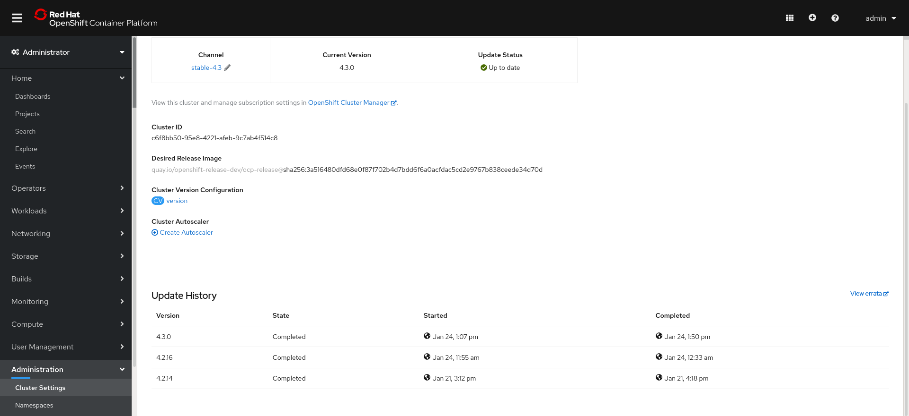
- Added Requests and Limits configurations.